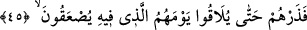
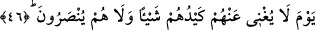
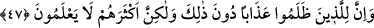

45. Artık çarpılacakları günlerine kavuşuncaya kadar onları kendi hallerine
bırak.
“Bırak onları…” Şimdi, onlardan el çek, yâni onlarla savaşma ki henüz savaşmakla
emrolunmadın. Onların mükâfâtını bırak.“ Günlerine kavuşuncuya kadar,” ta onu
açıkça görecekleri bir vakte kadar onları bırak. “Çarpılacakları” korkudan
bayılacakları, helâk edilecekleri “günlerine kadar”
Ancak “Saıke” kelimesi, “Göklerde ve yerde olanlar korkudan bayılmışlar” (ez-
Zümer 39/68) âyetinde bayılmak yanında “ölmek” mânâsında da kullanılmıştır.
Müşriklerin bu âyetle haber verilen çarpılmalarından murad, onların iddiâ edildiği gibi
birinci sûrun üflenmesindeki ölümleri değil, Bedir günündeki öldürülmeleri
hâdisesidir. Zira, ilk sûrun üflenişinde zâten canlı olan herkes ölecektir.
İbn Şeyh şöyle demiştir: Cevabın bu mezkur şekilde seçilmesinden maksad,
müşriklerin hüccet ile perişan edilip şaşkın bırakılacaklarını beyân etmek ve onların bu
hususta aleyhte laf söylemelerinin gayesinin sadece inâd ve tekâbür olduğunu
bildirmektir. Öyle ki, eğer onlara seçtikleri bütün sorularda bir cevap dahi yetiştirsek
yine inad ve tekâbürden başka bir şeyin kendilerinden tezâhür etmeyeceğini
belirtmektir. Bu nedenle âyet-i kerîmenin başına “fâ” harfi getirilmiştir.
46. O gün planları kendilerine hiçbir fayda vermez ve yardım da görmezler.
“O gün, planları kendilerine hiçbir fayda vermez” Yâni o gün tuzakları azabın def’i
husûsunda kendilerine hiçbir şekilde fayda veremez. Onların tuzakları, azaptan hiçbir
şey eksiltmez. O gün, dönüşü olmayan ve onlara fayda vermeyen bir gündür. “Ve onlar”
azabın def’î husûsunda başkaları tarafından “yardım da görmezler.”
47. Şüphesiz zulmedenlere, ondan başka da azap vardır. Fakat çokları bilmezler.
“Şüphesiz zulmedenlere” yâni Ebû Cehil ve ashabı gibi zâlimlere “ondan başka”
yâni onların öldürülmelerinden önce de yine kuvvetlerinin önleyemeyeceği, Duhan
sûresinde de belirtilen, yedi seneyi bulan bir kuraklık “azabı vardır.” Yahut onun da
ötesinde kabir azabı veya kabir azabının sonrasındaki âhiret azabının envâ-i çeşidi de
vardır. “Fakat çokları” bu mezkûr azabın onların son derece ifrât-ı cehilleri ve